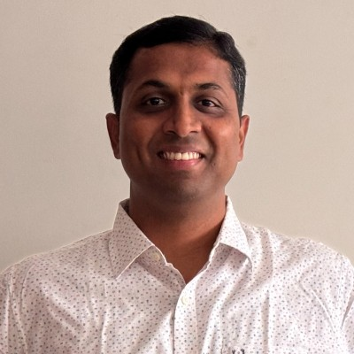

Kishore Pai
Technical Support Leader
With over 20 years of experience building and managing high-performing technical support teams, I specialize in driving Customer Success through strategy and operational excellence.

About Me
A seasoned Technical Support Leader with 20+ years of expertise in the technology sector. My career has been dedicated to scaling support organizations, optimizing customer success frameworks, and implementing strategic initiatives that enhance user satisfaction and retention.
Expertise in managing cross-functional teams, overseeing global support operations, and leveraging deep technical knowledge in database administration (Oracle, Vertica, Druid) and Cloud technologies (AWS) to deliver superior customer outcomes.
Experience
Manager, Technical Support

Bengaluru, Karnataka, India · On-site
- Hired to establish the technical support function for MicroFocus Analytics Database, Data Protector, and the wider suite.
- Building and scaling a strong L3 support team to cover a global customer base.
Senior Manager, Technical Support
Bengaluru, Karnataka, India · Remote
- Responsible for running the APAC Technical Support operations, working across timezones for a global customer base.
- Managed an experienced technical staff through a wide range of complex technical issues on enterprise-grade analytics platforms.
Senior Manager, Global support
Bengaluru, Karnataka, India
- Leading the front line support of both technical and functional experts for Stibo global support.
- Responsible for all operational aspects of running a high-performing product support team.
Technical Manager and System Architect
Bengaluru Area, India
- Responsible for effective running of 24x7 technical support operations from Bangalore, supporting global customers.
- Expertise in Stibo systems proprietary software (STEP - Stibo Enterprise Platform).
Oracle DBA Lead Manager

Bengaluru, Karnataka, India
- Lead DBA for the center and single point of contact for Oracle Infrastructure.
- Led a team of DBAs and spearheaded Oracle initiatives across GE business units.
Oracle Database Administrator
Bengaluru, Karnataka, India
- Managed and optimized complex Oracle database environments to ensure high performance and reliability.
- Implemented robust database management strategies for enterprise-level applications.
Expertise & Skills
Leadership
Technical
Certifications
Education
Bachelor of Engineering (B.E.)
Completed undergraduate degree with a focus on core engineering principles and problem-solving.